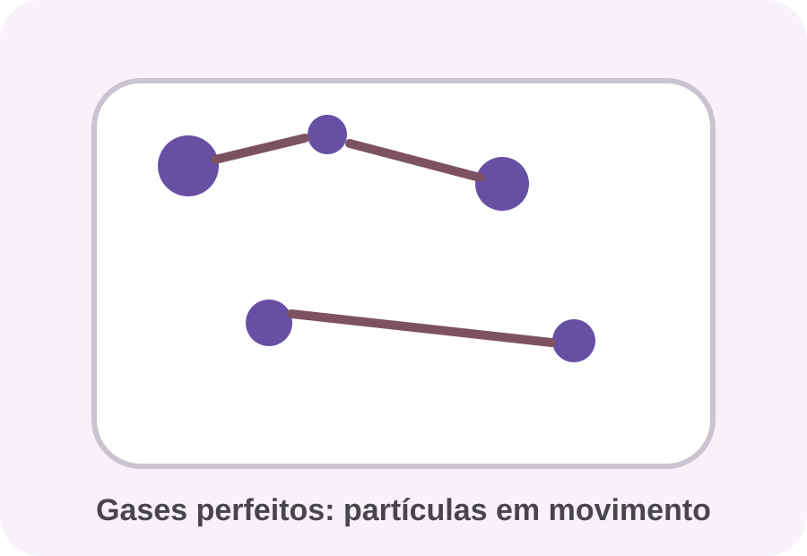
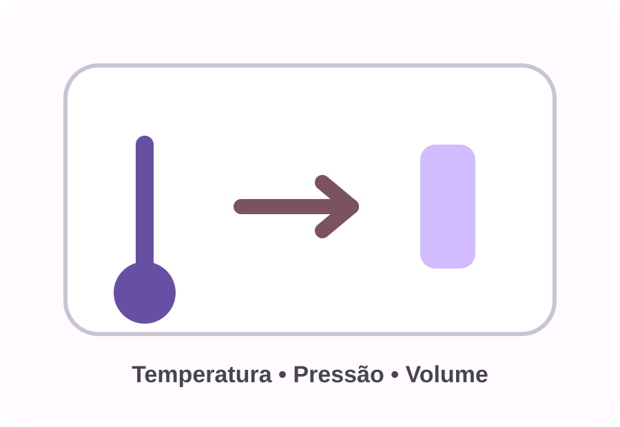
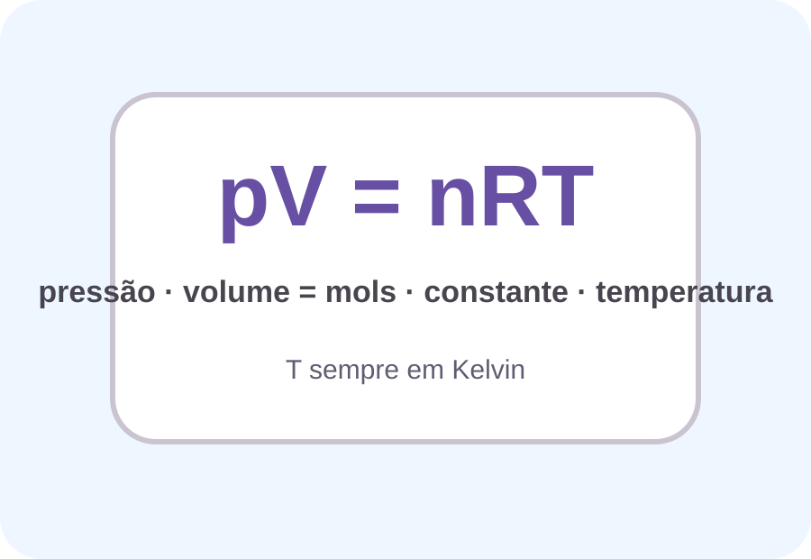
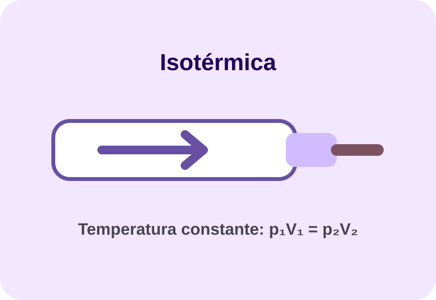
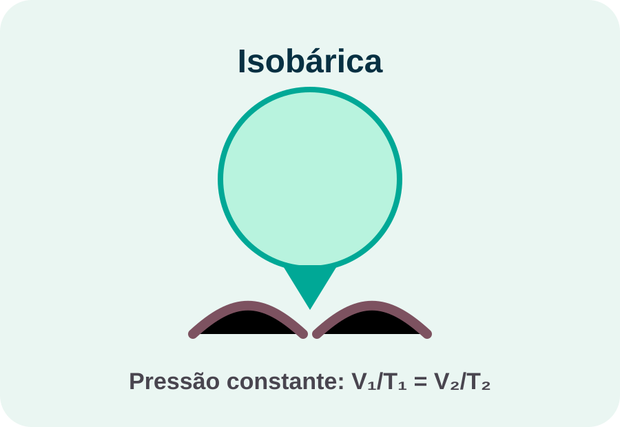
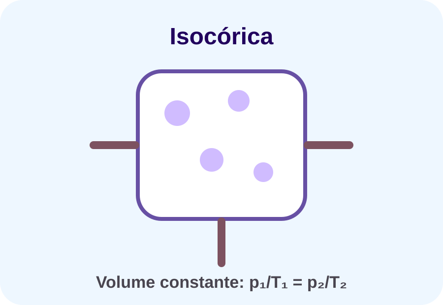
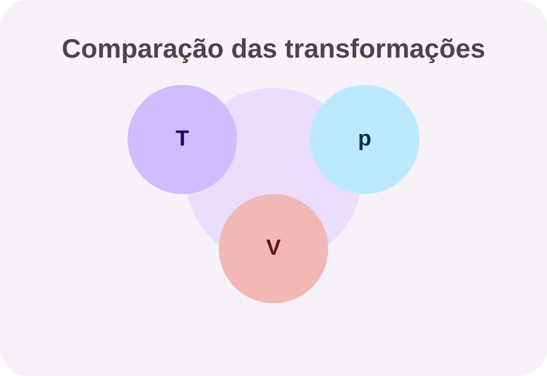
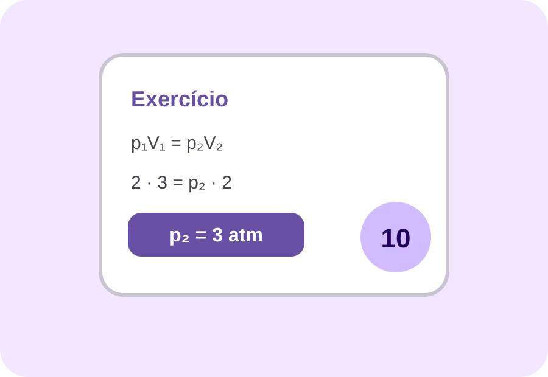
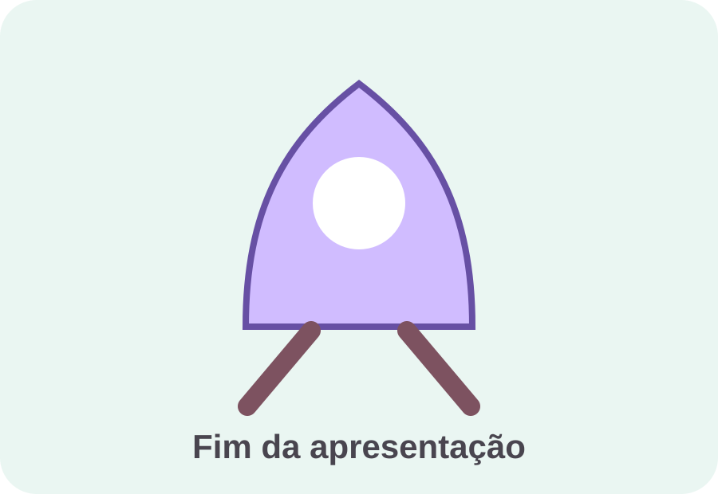

Como a Física simplifica o comportamento dos gases.
Trabalho de Física
Gases Perfeitos
Uma apresentação interativa sobre variáveis de estado e transformações gasosas.
Aluno: Mateus Henrique
Turma: 1º ano do Ensino Médio
Professor(a): __________________
Data: 27/05/2026

Roteiro
O caminho da apresentação
O conteúdo foi organizado como uma linha de raciocínio: conceito, variáveis, fórmulas e transformações.
Temperatura, pressão e volume como variáveis principais.
Isotérmica, isobárica e isocórica com exemplos.
Comparação rápida e exercício resolvido.
Conceito
O que são gases perfeitos?
Gás perfeito é um modelo ideal usado para estudar gases de forma mais simples. Nesse modelo, as partículas são consideradas muito pequenas, estão em movimento constante e não perdem energia nas colisões.
Ideia principal:
o comportamento do gás pode ser descrito pela relação entre pressão, volume e temperatura.
Por que esse modelo é útil?
- Ajuda a prever mudanças no gás.
- Facilita cálculos de Física.
- Explica situações como balões, seringas e recipientes fechados.

Variáveis de estado
Temperaturarepresenta o grau de agitação das moléculas.
Pressãoé a força que o gás exerce nas paredes do recipiente.
Volumeé o espaço ocupado pelo gás.
Temperatura, pressão e volume
Equação dos gases
A relação geral
A equação dos gases perfeitos liga as três variáveis principais com a quantidade de matéria do gás.
pV = nRT
Em uma comparação entre dois estados do mesmo gás, usamos:
p₁V₁ / T₁ = p₂V₂ / T₂


Transformação gasosa
Isotérmica
A temperatura permanece constante. Por isso, pressão e volume variam de forma inversa.
p₁V₁ = p₂V₂
Mini laboratórioarraste a pressão
p = 2.0 atmV ≈ 3.0 L
Transformação gasosa
Isobárica
A pressão permanece constante. Quando a temperatura aumenta, o volume também aumenta.
V₁ / T₁ = V₂ / T₂
Exemplo: um balão aquecido tende a expandir, pois o gás ocupa mais espaço.


Transformação gasosa
Isocórica ou isovolumétrica
O volume permanece constante. Se a temperatura aumenta, a pressão também aumenta.
p₁ / T₁ = p₂ / T₂
Exemplo: gás em um recipiente fechado e rígido sendo aquecido.
Memorização rápida
Comparação entre as transformações
TransformaçãoConstanteRelação
IsotérmicaTp ↑, V ↓
IsobáricapT ↑, V ↑
IsocóricaVT ↑, p ↑


Aplicação
Exercício exemplo
Um gás sofre transformação isotérmica. Inicialmente, ele está a 2 atm e ocupa 3 L. Depois, passa a ocupar 2 L. Qual é a nova pressão?
p₁V₁ = p₂V₂
2 · 3 = p₂ · 2
p₂ = 3 atm
Base do trabalho
Conteúdo retirado da aula
O site foi montado a partir do conteúdo do quadro: variáveis de estado físico e transformações gasosas.
Resumo do quadro:
temperatura, pressão, volume, isotérmica, isobárica e isocórica.


Conclusão
O que aprendemos?
Os gases perfeitos ajudam a entender como pressão, volume e temperatura se relacionam. Cada transformação mantém uma variável constante e mostra como as outras mudam.
Isotérmica: T constante
Isobárica: p constante
Isocórica: V constante